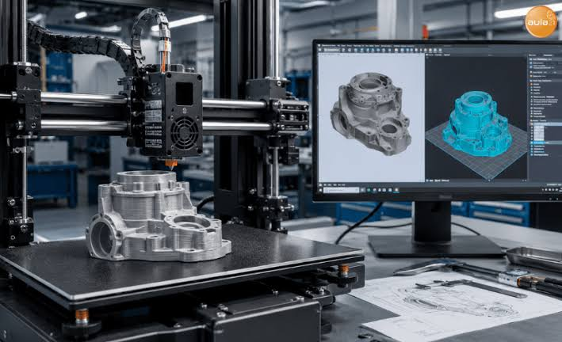

Mercados generados por las THD
Las Tecnologías Habilitadoras Digitales (THD) están transformando numerosos sectores económicos y creando nuevos mercados y oportunidades de negocio.
En FlopBus trabajamos principalmente en el sector del transporte y la logística, aprovechando estas tecnologías para desarrollar soluciones inteligentes que mejoren la movilidad, la gestión de flotas y la distribución de mercancías.
A continuación, presentamos cuatro mercados en los que nuestras tecnologías tienen una aplicación importante.
1. Ciudades inteligentes (Smart Cities)

Las ciudades inteligentes utilizan tecnologías digitales para mejorar la calidad de vida de sus habitantes, optimizar los servicios públicos y reducir el impacto ambiental.
En el transporte, permiten controlar el tráfico, gestionar los aparcamientos, mejorar el transporte público y reducir la congestión de las carreteras.
THD relacionadas
- IoT: sensores que recopilan información sobre el tráfico y la movilidad.
- Inteligencia Artificial: analiza los datos para mejorar la circulación y las rutas.
- Cloud Computing: almacena y comparte información entre los diferentes servicios urbanos.
Ejemplo real: Barcelona Smart City
Barcelona utiliza la plataforma Sentilo, basada en IoT, para recopilar información de sensores distribuidos por la ciudad. Estos dispositivos permiten controlar diferentes servicios urbanos y mejorar la gestión del tráfico, los residuos y otros recursos.
Más información: Proyecto IoT de Barcelona (SEIDOR).
2. Software como servicio (SaaS) para logística

El mercado SaaS (Software as a Service) consiste en ofrecer programas informáticos a través de Internet, sin necesidad de instalarlos y mantenerlos localmente en cada empresa.
En el sector logístico, estas plataformas permiten controlar vehículos, consultar pedidos, gestionar almacenes y organizar las entregas desde cualquier dispositivo conectado.
THD relacionadas
- Cloud Computing: permite acceder al software y a los datos desde Internet.
- IoT: conecta los vehículos y recopila información en tiempo real.
- Inteligencia Artificial: analiza los datos para mejorar la planificación logística.
- Ciberseguridad: protege los datos de clientes, trabajadores y empresas.
Ejemplo real: Samsara
Samsara es una empresa que ofrece una plataforma digital para gestionar flotas de transporte. Su sistema permite localizar vehículos mediante GPS, consultar diagnósticos, controlar el consumo de combustible y analizar el comportamiento de los conductores.
Más información: Plataforma logística de Samsara.
3. Puertos inteligentes (Smart Ports)

Los puertos inteligentes utilizan tecnologías digitales para automatizar operaciones, controlar mercancías y mejorar la coordinación entre barcos, camiones, almacenes y trabajadores.
Gracias a estas soluciones se pueden reducir los tiempos de espera, mejorar la trazabilidad de los contenedores y aprovechar mejor las infraestructuras.
THD relacionadas
- IoT: sensores que controlan la ubicación y el estado de las mercancías.
- Gemelo Digital: crea una representación virtual del puerto para simular operaciones.
- Inteligencia Artificial: optimiza la organización de contenedores y los movimientos de vehículos.
- Cloud Computing: facilita el intercambio de información entre las empresas portuarias.
Ejemplo real: Puerto de Rotterdam
El puerto de Rotterdam, en Países Bajos, trabaja con un gemelo digital que representa sus infraestructuras, movimientos de barcos, condiciones meteorológicas y otros datos. Esto permite mejorar la planificación y la gestión de sus operaciones.
Más información: Infraestructura inteligente del puerto de Rotterdam.
4. Movilidad inteligente y vehículos conectados

La movilidad inteligente es un mercado que busca transformar la forma en la que las personas y las mercancías se desplazan mediante vehículos conectados, sistemas de comunicación y soluciones digitales.
Estas tecnologías permiten mejorar la seguridad vial, controlar el estado de los vehículos, conocer el tráfico en tiempo real y desarrollar sistemas de transporte más sostenibles.
THD relacionadas
- IoT: conecta los vehículos con sensores y sistemas de control.
- Inteligencia Artificial: permite predecir el tráfico y optimizar los desplazamientos.
- Cloud Computing: facilita la comunicación entre vehículos y centros de control.
- Ciberseguridad: protege las comunicaciones y los sistemas de los vehículos conectados.
Ejemplo real: Autobuses eléctricos Electreon
Electreon desarrolla sistemas de carga inalámbrica para vehículos eléctricos. Un ejemplo es su proyecto de carga inductiva para autobuses eléctricos en Israel, que permite recargar sus baterías mediante tecnología instalada en determinadas zonas de estacionamiento.
Más información: Proyecto de Electreon para autobuses eléctricos.
THD emergentes y nuevos mercados
Las tecnologías emergentes permiten desarrollar nuevos productos, servicios y oportunidades de negocio. En FlopBus nos interesa especialmente la Fabricación Aditiva o impresión 3D, ya que tiene aplicaciones interesantes en el sector del transporte y el mantenimiento de vehículos.

Fabricación aditiva y mercado de repuestos personalizados
La fabricación aditiva consiste en crear objetos tridimensionales mediante la superposición de capas de material a partir de un diseño digital.
Esta tecnología puede aplicarse al mercado de repuestos y componentes para vehículos, permitiendo fabricar determinadas piezas bajo demanda sin necesidad de mantener grandes cantidades de existencias.
¿Cómo podría aprovecharlo FlopBus?
- Fabricar piezas de repuesto específicas para determinados vehículos.
- Reducir los tiempos de espera para conseguir componentes difíciles de encontrar.
- Disminuir el almacenamiento de piezas y el desperdicio de materiales.
- Crear prototipos para mejorar o adaptar componentes de los vehículos.
Mercado emergente al que apunta: fabricación personalizada de repuestos, mantenimiento industrial y producción bajo demanda para el sector de la automoción y el transporte.
Relación entre THD, mercados y oportunidades de negocio
En la siguiente tabla mostramos cómo las tecnologías de nuestro catálogo pueden aplicarse a diferentes mercados y qué oportunidades representan para FlopBus.
| THD | Mercado | Oportunidad de negocio para FlopBus |
|---|---|---|
| Internet de las Cosas (IoT) | Ciudades inteligentes y movilidad conectada. | Instalación de sensores y sistemas de monitorización de flotas y vehículos. |
| Inteligencia Artificial | Logística inteligente y transporte. | Desarrollo de sistemas de optimización de rutas y predicción de averías. |
| Cloud Computing | SaaS y gestión logística. | Creación de plataformas online para gestionar vehículos, pedidos y entregas. |
| Gemelo Digital | Puertos inteligentes e infraestructuras. | Simulación de rutas, almacenes y operaciones logísticas para mejorar su eficiencia. |
| Ciberseguridad | Vehículos conectados y plataformas digitales. | Protección de los datos de los clientes y de los sistemas de gestión de transporte. |
| Fabricación Aditiva | Automoción y mantenimiento industrial. | Fabricación de prototipos y determinados repuestos personalizados para vehículos. |
Conclusión
Los nuevos mercados tecnológicos representan una gran oportunidad para el sector del transporte y la logística. Gracias a las THD, FlopBus puede ofrecer soluciones más eficientes, seguras y sostenibles a sus clientes.
Nuestro objetivo es seguir incorporando tecnologías innovadoras para adaptarnos a las necesidades del mercado y contribuir a la transformación digital del transporte.